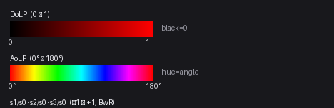
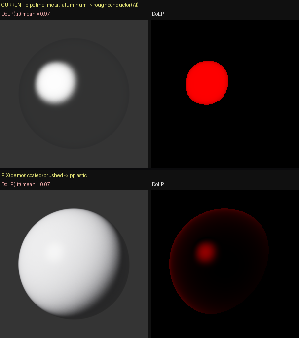

.glb의 UV로 베이크됨 — .obj export가 UV를 잃어서 렌더에는 glb의 UV를 복원해 사용.)씬 kr_20260625에서 각 광학 클래스를 대표하는 소형 오브젝트 5개를 골라, (1) 베이크된 PBR 채널맵과 (2) 능동 편광 조명(area flash + linear polarizer)을 움직이며 찍은 편광 응답을 비교한다. 핵심 명제: "RGB에서는 <X>처럼 보이지만 편광에서는 <Y>로 드러난다" — 재질의 optical class가 편광 신호로 분리된다.
| # | class | 오브젝트 | 주입 BSDF | 편광 요약 (본 렌더) |
|---|---|---|---|---|
| 1 | metal | 수도꼭지 (Tap) | roughconductor Al | DoLP ~0.9 (전면 강한 편광) |
| 2 | glass | 유리병 (Jar) | dielectric (IOR 1.5) | DoLP 0.63→0.66 (specular만, 입사각 의존) |
| 3 | diffuse (textured) | 식품상자 (FoodBox) | pplastic + 인쇄 라벨 albedo | DoLP ~0.2 (약한 코팅 편광) |
| 4 | diffuse (flat) | 직물 램프갓 (DeskLamp) | pplastic + 직물 albedo | DoLP ~0.06→0.09 (grazing서 상승) |
| 5 | brushed-metal | TV장 (TVStand) | roughconductor Al (metallic=0이지만 optical_class=metal) | DoLP ~0.9 (금속처럼 편광) |
conductor/roughconductor(금속·거울) + dielectric(유리) + pplastic(diffuse·plastic) 로 주입한다. 아래 §요약 밑의 표 참고 — 이 셋만이 이 빌드의 폴라라이즈드 variant에서 편광 Fresnel을 낸다.
.glb의 UV로 베이크됨 — .obj export가 UV를 잃어서 렌더에는 glb의 UV를 복원해 사용.)
polarized_area emitter는 NEE가 살아있어 배경·투과 노이즈가 크게 준다. RGB(S0)는 각 재질의 실제 색을 담는다(foodbox 인쇄 라벨, lampshade 분홍 직물 — glb UV로 베이크 텍스처 매핑). DoLP: 금속(tap)≈0.9 강함, 유리(jar) specular만, diffuse는 pplastic 코팅으로 약하게(foodbox~0.2, lampshade~0.06). 편광 세기가 optical class를 정렬한다. tvstand는 multi-material 분리 후 이 각도에선 나무 상판이 보여 약하지만, 금속 프레임은 metallic=0인데도 conductor로 강편광.cuda_ad_spectral_polarized)| 플러그인 | DoLP(Brewster 테스트) | 편광 | 용도 |
|---|---|---|---|
dielectric (smooth) | 0.999 | ✅ | 유리(매끈) |
conductor / roughconductor | 0.95 | ✅ | 금속·거울 |
pplastic | 0.87 | ✅ | diffuse·도장·직물·코팅 |
roughdielectric | 0.000 | ❌ | (편광 미지원 — 사용 금지) |
thindielectric | 0.000 | ❌ | 미지원 |
plastic / roughplastic | 0.000 | ❌ | 미지원 → pplastic로 대체 |
roughdielectric과 plastic/roughplastic은 이 빌드에서 편광 Fresnel을 만들지 못한다(DoLP≡0). 유리는 dielectric(smooth), 도장/plastic/diffuse는 pplastic으로 주입해야 편광이 나온다. render_material_closeups.py 등 dielectric/plastic 주입 경로 점검 필요.conductor·roughdielectric가 섞여 들어가나 — 원인분석의도한 편광 트리오는 roughconductor·pplastic·dielectric인데, 실제 렌더에는 conductor와 roughdielectric도 나타난다. 판정:
conductor (smooth) — 문제 아님(의도). mirror optical_class → strategy conductor(거울=매끈, import _material_binding:211 · render preset_strategy:1169). §2 표대로 conductor는 DoLP 0.95 ✅ 편광 정상 — conductor-family라 허용 범주. 배제 대상 아님.roughdielectric — 진짜 위반(DoLP=0). 아래 4곳에서 샌다.| # | 누수 지점 | 파일:라인 | 설명 |
|---|---|---|---|
| ① | 편광-가능 화이트리스트 오류 (근본) | render_daemon._POLAR_RGB_ANALYTIC_BSDFS:920 · multimodal.polar_rgb_types:495 | "이 BSDF는 편광 OK" 판정 세트가 DoLP=0인 roughdielectric·thindielectric까지 포함 → 파이프라인이 편광 가능으로 착각 → 치환·경고 안 함. 정책이 데이터로 강제되는 유일 지점인데 여기가 틀림. |
| ② | frosted/matte glass 매핑 | import _material_binding:205-206 · render preset_strategy:1168 | 이름에 frost/matte → roughdielectric. RGB 외형엔 맞지만 편광 빌드선 0. |
| ③ | scene stager가 glass를 하드코딩 | multimodal:2671(편광 fallback) · 857·2560·2794·3118 · render_daemon:1392 | 편광 약할 때 재렌더하는 _stage_polarized_fallback_scene이 glass를 roughdielectric로 박음 → 오히려 편광 0으로 만드는 자기모순. |
| ④ | 치환 guard 부재 | — | polar 패스 직전 roughdielectric→dielectric / roughplastic·plastic→pplastic / thindielectric→dielectric로 바꿔주는 필터가 없음. |
preset_strategy·_material_binding)는 원래 RGB/analytic 렌더 기준으로 작성돼 편광 제약을 반영하지 않았고, 편광 가능 여부 판정 화이트리스트 자체가 roughdielectric·thindielectric를 포함(오류) → "편광 안 되는 플러그인 배제" 가드가 코드에 강제된 적이 없다._POLAR_RGB_ANALYTIC_BSDFS(920)·polar_rgb_types(495)에서 roughdielectric·thindielectric 제거(근본). (2) polar 패스 직전 치환 가드 추가(roughdielectric/thindielectric→dielectric, roughplastic/plastic→pplastic). (3) 편광 fallback scene(2671) 등의 glass를 dielectric로. (4) 선택: frosted_glass는 RGB 패스만 roughdielectric, polar 패스는 dielectric로 분기(frost 외형 vs 편광 trade-off). conductor는 유지(편광 정상).능동 편광 조명 = 커스텀 polarized_area emitter(아래 §6). 배경에는 편광광이 실제로 뿌려지고 변하는지 보이는 witness 2개 — 좌: bare mirror(flash 편광을 반사 → DoLP/AoLP에 나타남), 우: mirror+고정 polarizer analyzer(소광 witness: 조명 편광각이 돌면 밝기가 밝→어둠→밝). 두 모션:
6패널 = RGB(S0) · DoLP · AoLP · s1/s0 · s2/s0 · s3/s0. DoLP·AoLP는 편광 마스크(S0>0.04 & DoLP>0.05)로 편광 영역만; s1/s2/s3는 마스크 없이 전영역 BwR(unpolarized=흰색, 부호장 그대로). s3는 원편광이라 선형광학만 있는 이 씬에선 ≈0(흰색). soft Reinhard 톤매핑으로 하이라이트가 안 날아가고 EXR(S0)도 동시 출력. 컬러바는 애니메이션 프레임에 넣지 않고 아래 별도 legend로 제공한다(GIF 팔레트 양자화로 프레임마다 색이 흔들리는 것을 방지). 배경 벽은 glossy(pplastic)라 편광 반사가 보인다(analyzer/벽 witness 강화). 광원 polarized_area, spp8000(유리 12000).



dielectric)
dielectric)과 나무 뚜껑(pplastic)을 multi-material로 분리. 투명 유리는 specular 하이라이트에서만 편광, grazing으로 갈수록 DoLP↑(Brewster). 투과 특성상 남는 grain은 spp16000 + max_depth 제한 + firefly 클램프로 완화.
pplastic + 라벨 텍스처)

pplastic + 직물 텍스처)


roughconductor)과 나무 상판(pplastic+텍스처)을 각 geometry로 나눠 주입. 이 각도에선 나무 상판이 보여 DoLP가 약하지만, 금속 프레임은 metallic=0.0인데도 conductor로 렌더돼 강편광한다(값과 렌더의 불일치 = Q3).
tvstand가 "나무 텍스처인데 금속처럼 강하게 빛나는" 어색함은 두 원인이 겹친 것이다(이 물체는 실제로 금속 프레임+나무 상판의 multi-material):
.obj는 UV(vt)를 잃어(§4) — (a) 나무 albedo가 barycentric fallback으로 전 표면에 가짜 매핑 + (b) per-material 분리 불가 → 오브젝트 전체가 하나의 optical_class(metal)로 붕괴(=나무 텍스처 전역 + 전체 conductor). 본 리포트 클로즈업은 .glb로 UV/geometry를 복원해 우회했다.optical_class는 재질 이름 키워드로 결정되고(brush/grain/metal→metal_aluminum), Infinigen metallic은 신뢰불가라 의도적으로 무시(설계결정). 이후 metal_*→roughconductor(Al) 주입 → 편광 빌드에서 conductor DoLP≈0.9~0.97. 그래서 metallic=0인 brushed_metal도 알루미늄처럼 과편광한다. 코드: apps/import_infinigen_scene.py _material_binding(metal_*→roughconductor 무조건).
수정 방향(여기선 파이프라인 미변경, 데모만): metallic 무시 결정을 지키면서 이름 키워드로 세분화 — brush/coat/paint/finish/laminate 계열 "표면 마감"은 conductor가 아니라 pplastic(코팅 유전체)로 라우팅하면 과편광이 사라진다. Cause A는 병행 작업의 OBJ-UV fix(_ensure_uv 선호출 / glb 라우팅)로 해소 예정.
.obj 대신 .glb를 소비해야이번 작업에서 드러난 구조적 이슈: OpticalNav 렌더 경로는 .obj 메시를 소비하는데(import_infinigen_scene.py:547 source_ref=<import>/meshes/<id>.obj), Infinigen import의 .obj는 UV(vt)를 잃어버린다(대부분 vt=0). 그래서 베이크된 albedo/텍스처를 렌더에서 매핑할 수 없고 per-material 분리도 안 된다.
반면 같은 오브젝트의 .glb에는 UV와 material별 geometry가 온전히 살아있다(본 작업은 trimesh로 glb를 로드해 per-material UV 메시로 복원 → 베이크 텍스처 매핑 + per-material BSDF 성공).
중요한 건 이미 그 machinery가 코드베이스에 있다는 점이다 — glb_texture_adapter.py는 GLB를 per-material OBJ 파트(has_uv 추적) + 추출 텍스처로 브리지한다. 다만 이건 현재 DTC 카탈로그 전용(vendor_datasets/dtc_objects/*/3d-asset.glb)이고, Infinigen import는 이 경로를 타지 않는다.
| 자산 | source_ref | UV | 텍스처 | per-material |
|---|---|---|---|---|
| DTC 카탈로그 | .glb → glb_texture_adapter | ✅ | ✅ 추출 | ✅ 분리 |
| Infinigen import | .obj (UV 없음) | ❌ | ❌ 매핑 불가 | ❌ |
권장: Infinigen import도 .glb를 source로 참조하고 glb_texture_adapter(또는 그 확장)를 태워서 UV·베이크 텍스처·per-material 분리를 렌더 경로에서 사용하도록 개선. blender export 단계에서 UV 보존 .obj를 쓰는 방법도 있으나, glb 경로 재사용이 기존 계약(OBJ + extracted_material)과 호환되어 더 간단하다.
polarized_area emitter 플러그인문제: "area emitter + 앞의 polarizer 판" 조합은 편광판이 NEE(직접광 shadow ray)를 막아, 빛이 BSDF 샘플링 경로로만 들어와 고분산 → firefly. 특히 투명 유리는 심했다.
해결: 이미 편광된 빛을 직접 방출하는 커스텀 emitter를 작성(modules/mitsuba3/src/emitters/polarized_area.cpp). area.cpp를 복제하고 eval/sample_direction/eval_direction의 depolarizer를 theta각 linear-polarizer Mueller(방출방향 si.wi 기준, polarizer BSDF의 frame 레시피 재사용)로 교체. 파라미터 radiance·theta(deg). 별도 편광판 surface가 없어 NEE가 살아있고, 씬도 단순해진다.
효과: 편광은 동일(DoLP 0.95, area+polarizer와 일치)하면서, 곡면 유리+diffuse 배경 씬에서 firefly/grain이 급감. (flat 평판 테스트에선 차이가 작지만 — 그 경우 노이즈가 BSDF 분산 지배 — 실제 오브젝트 씬에서 큰 개선.) 빌드: ninja polarized_area → plugins/polarized_area.so.
남은 유리 grain(투명 dielectric의 굴절 caustic)은 NEE로도 근본 제거되지 않아 spp로 완화. 필요 시 OptiX denoiser가 다음 후보.
관찰: brushed-metal로 표시된 TVStand 렌더에서 표면 전체에 나무 텍스처가 보이고, 그 나무 표면이 금속처럼 강하게 편광(DoLP~0.9)한다. 세 가지 가설을 파이프라인 근거로 판정한다.
| 가설 | 내용 | 판정 |
|---|---|---|
| ① | 원래 fully 나무인데 metal 머터리얼이 잘못 붙었다 | ✗ (전제 틀림) — 물체는 manifest상 실제 금속 프레임 + 나무 상판. "fully 나무"가 아님. 다만 금속부가 과편광하는 건 별개 문제(원인 B). |
| ② | 나무 위에 유약/니스를 발라 빛나는 게 맞다 | ✗ — 유약/니스칠 나무의 물리적 표현은 pplastic(diffuse 위 dielectric 코트)로 DoLP~0.2의 약한 편광. 지금 DoLP~0.9는 코트가 아니라 "통 알루미늄(conductor Al)"으로 취급해서 나오는 값. 물리적으로 유약이 아님. |
| ③ | 나무+금속인데 렌더 문제로 나무 텍스처가 전역 입혀졌다 | ◐ (기본 OBJ 경로의 실제 메커니즘) — 물체는 실제 나무+금속이 맞고, 기본 렌더 경로가 per-material을 못 나눠 나무 albedo가 전역 + 전체가 단일 metal BSDF로 붕괴. 사용자가 본 그림과 일치. |
원인 A — 렌더 경로가 per-material을 못 나눔 (=가설 ③). 프로덕션 렌더는 .obj를 소비하는데 Infinigen .obj는 UV(vt)를 잃는다(§4). UV가 없으면 (1) 베이크된 나무 albedo가 barycentric fallback으로 전 표면에 가짜 매핑되고, (2) material별 geometry 분리 불가 → 오브젝트 전체가 하나의 optical_class(=metal)로 붕괴 → 나무 텍스처가 온 표면에 깔리면서 전체가 금속처럼 편광. 리포트의 클로즈업 렌더(#5)는 .glb를 trimesh로 로드해 이를 우회(프레임=conductor / 상판=pplastic 분리)한다 — 사용자가 나무 전역을 봤다면 분리 전 OBJ 경로 렌더를 본 것.
원인 B — 금속부의 과편광 (=Q3, 값과 렌더의 불일치). optical_class는 재질 이름 키워드로 정해진다(blender_export_scene.py _optical_class): 이름에 brush/grain/metal/alumin… 있으면 metal_aluminum, metallic 값은 무시(Infinigen metallic이 신뢰 불가라 의도적). shader_brushed_metal → metal. 이후 주입 레이어가 metal → roughconductor(Al eta/k)로 박고, 편광 빌드에서 conductor는 DoLP~0.9~0.95(§2 표). 그래서 metallic=0인데도 알루미늄처럼 강편광.
grain 키워드 오분류. _optical_class의 metal 키워드에 "grain"이 포함돼 있어, 이름에 grain이 든 나무(wood-grain) 재질도 metal_aluminum으로 오분류될 수 있다. brushed 금속뿐 아니라 나무결 재질까지 conductor로 갈 위험 — classification 보정 시 우선 점검 대상..glb source + glb_texture_adapter로 per-material 분리를 렌더 경로에 태움 → 상판=pplastic(약편광)/프레임=conductor(강편광)로 정확히 갈림. (2) brushed/coated·저 metallic·저 roughness 금속은 conductor 대신 pplastic으로 보내는 classification 보정 + grain 키워드 오분류 제거 → Q3 과편광까지 완화.이 리포트 재질들이 어떻게 만들어지는지 3단계 전체 흐름. 파일·함수 근거 포함. (사용자 이해와 다른 지점은 아래 정정 콜아웃.)
[Blender/bpy] blender_export_scene.py → scene_manifest.json + .obj/.glb → import_infinigen_scene.py → authoring_map + render_binding → render_daemon._generate_opticalnav_render_scene_xml → render_scene.xml(BSDF) → multimodal.render_modalities → RGB·depth·normal·Stokes 편광 출력
tools/infinigen/blender_export_scene.py).obj(렌더용) + .glb(PBR/UV 프리뷰) 둘 다 출력. 삼각화 강제(Mitsuba OBJ 로더가 >1024자 face 줄 거부), normal export 안 함(Infinigen 퇴화 삼각형의 NaN normal이 로더를 죽여서 — Mitsuba가 재계산). 오브젝트를 원점-로컬로 임시 이동해 export.wm.obj_export가 UV 없는 메시를 vt=0으로 써서 렌더에서 텍스처가 barycentric 가짜 매핑됨. fix: OBJ export 직전에 _ensure_uv()가 smart_project로 UV 생성(bake 아틀라스와 같은 UV 공유하도록 순서 보장).--bake 시 Cycles로 per-object 텍스처 아틀라스 베이크(albedo=DIFFUSE, roughness=ROUGHNESS, normal=NORMAL, metallic=EMIT 트릭). ior/transmission/emission은 상수만.FACTORY_SEMANTIC 맵 + 컬렉션 접미사(.wall/.floor/.ceiling)로 chair/table/bed/shelf/plant/door/window/light/structure 분류.render_daemon.py + optical_constants.py)_resolve_material_binding의 preset→strategy 표), 그 다음 별도 "injection" 단계가 IOR/eta·k를 채운다. 그리고 3종이 아니라 pplastic·dielectric·roughdielectric·conductor·roughconductor·measured·measured_polarized·diffuse 전체._resolve_material_binding의 preset→strategy 표 — clear_glass→dielectric, frosted_glass→roughdielectric, mirror→conductor, painted_wall/wood/fabric/tile/plastic→pplastic, measured kind→measured_polarized, 기본 fallback pplastic. metal은 텍스처 경로에서 metallic>0.5 or is_metal → roughconductor. metallic은 blend 가중치가 아니라 conductor↔plastic 선택자(재질당 단일 BSDF).optical_constants.py): env ROBOMITUBA_BSDF_MODE=injected/measured일 때만 on(기본 legacy는 int_ior=1.5/Al 하드코딩). 렌더-XML 시점에 optical_class로 유전체 IOR 표(glass 1.50, ceramic 1.50, fabric 1.50, plant 1.42…)와 금속 preset(gold→Au, steel→Cr, aluminum→Al, mirror→Ag = Mitsuba 내장 측정 eta·k 스펙트럼)을 조회해 int_ior/material을 채움. 명시적 값이 있으면 그게 우선, 없으면 optical_class→이름키워드→base_color 순.diffuse_reflectance(bitmap/rgb), normal→normalmap 래핑, roughness→alpha(단, texture alpha는 roughconductor/roughdielectric만; pplastic은 스칼라로 클램프, floor 0.08~0.10).multimodal.py)RenderConfig.measured_scope="analytic_only"가 기본이라 measured pBRDF(measured_polarized/_rgb 플러그인)와 채널스플릿 RGB는 opt-in이고 이 리포트/기본 씬에선 안 탄다. RGB 본 이미지는 cuda_rgb(스펙트럴 아님), 편광 패스만 cuda_spectral_polarized.cuda_rgb, polar=cuda_spectral_polarized(resolve_variant(kind=...)).stokes integrator + nested direct. 15/16채널 film에서 s0~s3 추출 → 휘도가중 dop=√(s1²+s2²)/s0, aolp=½atan2(s2,s1), s1/s0·s2/s0, polar_rgb_preview, stokes_data.npz + 컬러바 PNG. 신호 약하면 pplastic_fallback 씬 재렌더.measured_polarized_rgb 플러그인(614/542/446nm 단밴드 슬라이스 직접 반환) 우선, 실패 시 3-pass fallback _compose_channel_split_rgb. 3-pass는 각 밴드를 luminance 스칼라로 붕괴해 R=G=B 회색 위험 있음(그래서 단밴드 모드는 fallback 거부).conductor(금속) + dielectric(유리) + pplastic(diffuse/plastic). roughdielectric·roughplastic은 편광 미지원(DoLP=0)이라 금지..glb의 UV를 복원해 베이크 albedo를 매핑 → S0가 실제 재질 색(라벨·직물색)을 담는다. .obj export는 UV를 잃으므로 glb를 써야 한다.visual.material.name=manifest 재질명) per-geometry BSDF 주입 가능 → jar(유리+나무), tvstand(금속+나무)를 정확히 렌더.grain 키워드가 나무를 metal로 오분류할 위험도 확인.cuda_rgb, 편광 패스만 cuda_spectral_polarized의 진짜 Stokes.